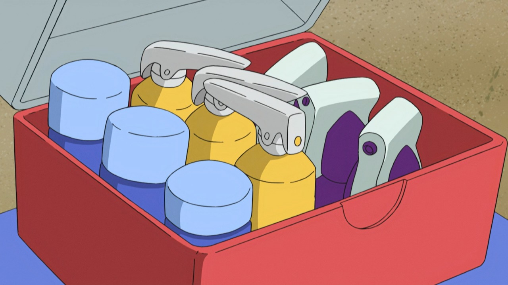

Detalhes do Produto

Itens Medicinais
A ferramenta mais icônica e essencial na jornada de qualquer treinador. A tecnologia evoluiu, resultando em diversos tipos de bolas, cada uma com características e taxas de sucesso diferentes.
Modelos Disponíveis:
- Poção - O item essencial para restaurar o HP de um Pokémon.
- Antídoto - Usado para curar um Pokémon do efeito de envenenamento.
- Cura Total - Usado para curar um Pokémon de todas as condições de status não voláteis e confusão.
- Reanimador - Revive o Pokémon desmaiado e restaura metade do seu HP máximo.